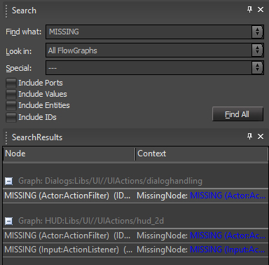
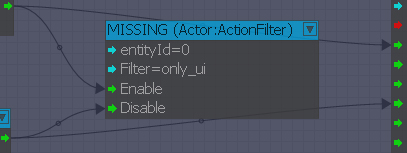
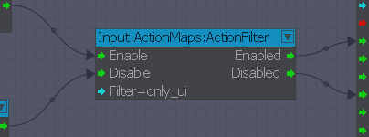

Audio
- The Wwise SDK structure that CRYENGINE expects (for a successful compilation and linking procedure) has changed with the 5.2 release. It is now provided by Audiokinetic. The Wwise "SDK" folder is expected under ".../Code/SDKs/Audio/wwise".
- The by default supported Wwise version has been updated to 2016.1.0.5775. Note: This requires Wwise projects (built on earlier versions) to have fully rebuilt soundbanks. This is in order for the Wwise implementation to successfully load and read these soundbanks.
Flowgraph
For sometime there has been the concept of having a Substitution.xml and a FlownodeBlacklist.xml. For more information see here.
Those *.xml files are project specific and currently are used extensively in GameSDK. However, since GameZero does have an empty substitution/blacklist it will show the original flow node names as provided by the code.
The refactoring we have applied resets this state so you will get the same result in GameSDK and GameZero. On a related note, this allows the porting of flowgraphs from GameSDK to GameZero and vice versa.
Locations:
- GameSDK\Libs\FlowNodes\Substitutions.xml
- GameSDK\Libs\FlowNodes\FlownodeBlacklist.xml
How to Fix Flowgraph Errors
It's likely that you will recognize the following message after upgrading to CRYENGINE 5.2:
Pic1: Critical error warning message
To fix this, open Flowgraph and search for MISSING flow nodes:
Pic2: Missing flow nodes 
Replace any deprecated flow nodes with the latest versions. For e.g:
Before:
Pic3: Flow nodes - before 
After:
Pic4: Flow nodes - after 